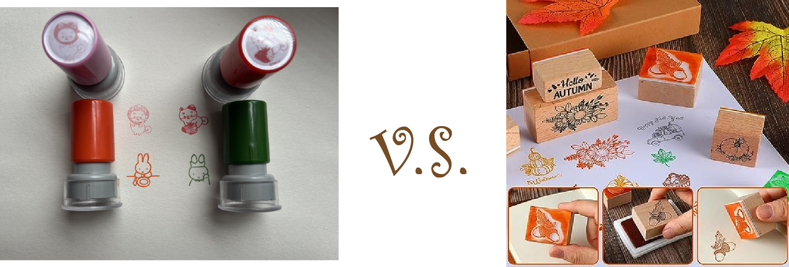

What about stamps?
Since the beginning of starting my stationary collection, I noticed I never had a great fondness for stamps. Probably because I think reusing the same stamp pattern can be redundant, and in my journals, I like to have a lot of variety which is why I stick to stickers! I also have never really enjoyed the process of using a stamp; having to use an ink pad and sometimes the ink appearing spotty on the page. It wasn’t until I came across a stamp set at my local Daiso that I decided to give stamps a chance.
I realized there are many different types of stamps. The ones used for stationary are primarily self-inking or wooden block stamps. I had always been acquainted with wooden block stamps; I remember using them for art activities in elementary school where we had to use dried out ink pads. However, the stamps I purchased are self-inking, they come with a cap to prevent dry-out, and they are less bulk and easier to store. While I don’t hold them to the same level as stickers, I am starting to enjoy using these stamps to fill empty spaces in my pages, and it helps that lots of my favorite stationary companies are starting to produce more stamp sets like these.
In my opinion as a junk journaler, I think stamps can be pretty fun and creative, it’s even possible to make your own stamps with rubber erasers! But personally, I have never been all that into stamps, but maybe more of these little tools will change my mind!